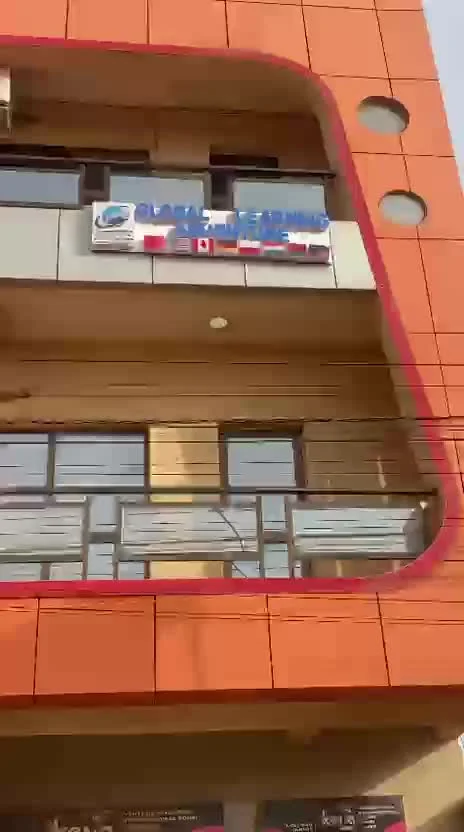

Orientation et universités
Choisir une filière et identifier des universités selon votre parcours, vos objectifs et votre budget.
Global Learning Adventure
Du choix de l’université à votre installation,
notre agence vous aide à préparer votre départ.
Rentrée de mars 2027 en ChinePréparez votre projet avec notre équipe.
Demander des renseignementsLa Chine est notre destination principale. Pour un autre pays, échangeons sur les possibilités adaptées à votre projet.
Choisir une filière et identifier des universités selon votre parcours, vos objectifs et votre budget.
Constituer votre dossier d’admission et rechercher les possibilités de bourse selon votre profil.
Préparer les pièces demandées pour le visa et anticiper les démarches avant votre voyage.
Bénéficier d’un accompagnement pendant vos premiers jours pour faciliter votre installation.
Les admissions, bourses et visas sont accordés par les établissements et les autorités compétents. L’agence vous accompagne dans la préparation des démarches.
Vous venez en Chine pour rencontrer des fournisseurs ou préparer des achats ? Nous vous accompagnons dans vos échanges et vos visites.
Organiser mon déplacementAccompagnement lors de vos visites et rendez-vous.
Aide à la communication et informations pratiques sur place.
Contacts avec des fournisseurs et des transitaires selon vos besoins.
Global Learning Adventure accompagne les étudiants dans leurs projets d’études à l’étranger, principalement en Chine.
Depuis près de trois ans, plus de 50 étudiants et des centaines de commerçants ont fait appel à l’agence.
Retrouvez notre équipe à la ZAD, près de l’immeuble Nestlé, en face de la station April Oil.
Venir à l’agence
Une présentation de notre activité et un aperçu de nos locaux.
Découvrez Global Learning Adventure en vidéo.
Repérez l’immeuble avant votre visite à la ZAD.
Contactez-nous avec votre niveau d’études, la filière souhaitée et la destination envisagée. Nous vous aiderons à préciser les prochaines étapes.
Nous recherchons avec vous les possibilités correspondant à votre profil et vous aidons à préparer votre candidature. L’attribution dépend des critères de l’organisme concerné.
Les frais et les pièces varient selon la formation, l’établissement et la destination. Notre équipe vous renseigne à partir de votre projet.
L’agence propose un accompagnement à l’installation en Chine. Les modalités sont à définir ensemble avant le départ.
Études à l’étranger ou déplacement professionnel : notre équipe est à votre écoute.
Ouagadougou, ZAD
Près de l’immeuble Nestlé,
en face de la station April Oil.
Burkina Faso
Repère : station April Oil, quartier ZAD.
Ouvrir dans Google Maps